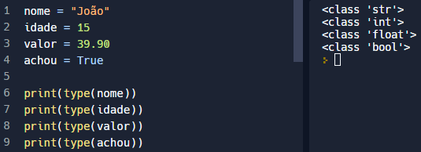

Acessibilidade
Acessibilidade
Python é uma linguagem de programação multiplataforma que permite desenvolver aplicações para games, desktop, web e dispositivos moveis. Além disso, ela pode se comunicar com outras aplicações em que forma desenvolvidas em outras linguagens como C, C++, Java e C#. Nesse artigo serão vistos exemplos diversos de sintaxes básicas utilizando python
O conceito de variável em Python é representado por um objeto (tudo é objeto), e toda variável é uma referencia. Elas são espaços na memoria onde podemos armazenar informações, representadas por escolhidos pelo usuário.
Em Python, assim como em outras linguagens de programação, o operador de atribuição é representado pelo sinal = (igualdade)
Em Python não é preciso declarar o tipo de dado. O interpretado reconhece o tido de valor que está sendo colocado na variável e já define o tipo correto automaticamente.
As variáveis possuem um tipo de dado que pode ser:
Esse tipo representa os números inteiros positivos e negativos.
Esses são números reais, que contém casas decimais. Por exemplo, o peso ou a altura de uma pessoa podem ser representados usando números de ponto flutuante.
Esses são variáveis usados principalmente para gravar informações de texto, que podem ser nomes próprios ou até mesmo nomes de outros objetos.
O tipo Booleano é um subtipo Int e por isso pode ser representado pelos valores True e False. Quando uma variável é definida como True, seu valor é verdadeiro. E no caso de receber o valor False, seu valor é falso.
Para descobrir o tipo de uma variável, basta usar o comando type(nome_da_variavel).
